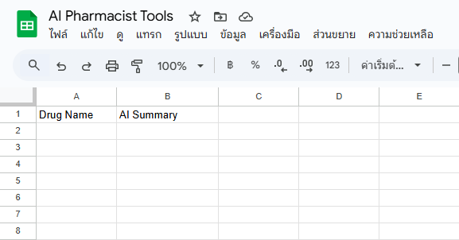

Quick Win: Step 1/4
เตรียมฐานข้อมูล (Google Sheets)
สิ่งที่ต้องทำ:
เปิด
Google Sheets ใหม่
ตั้งชื่อไฟล์ว่า "AI Pharmacist Tools"
ตั้งชื่อชีทว่า "Drug Summarizer"
ตั้งชื่อ A1 "Drug Name" และ B1 "AI Summary"
